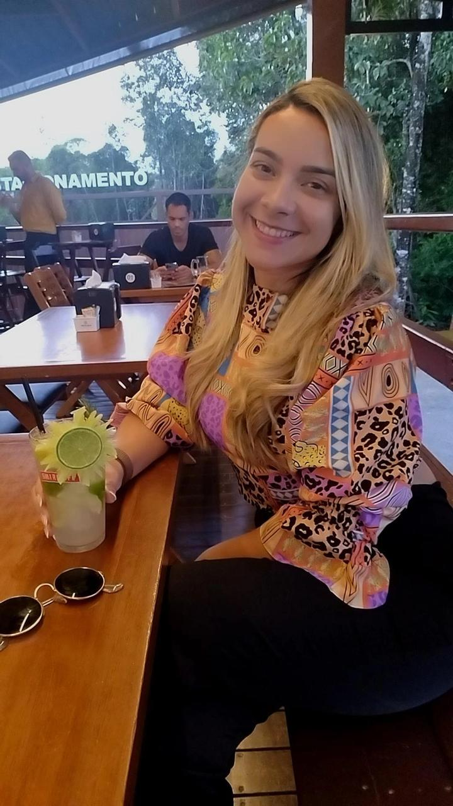
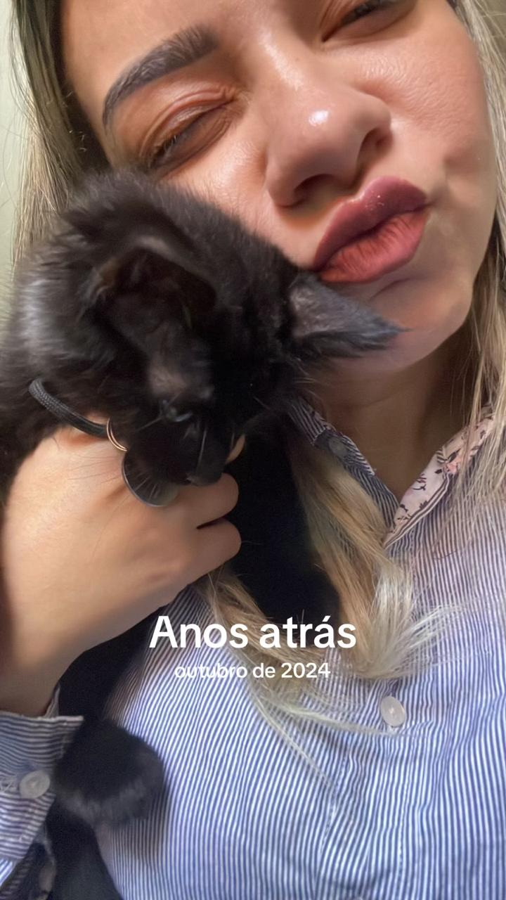
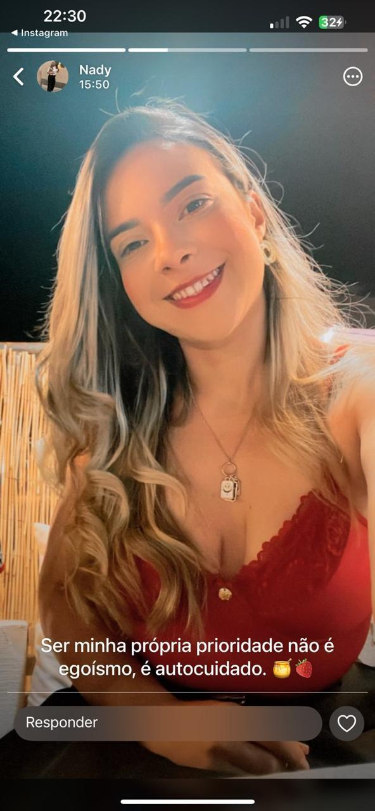
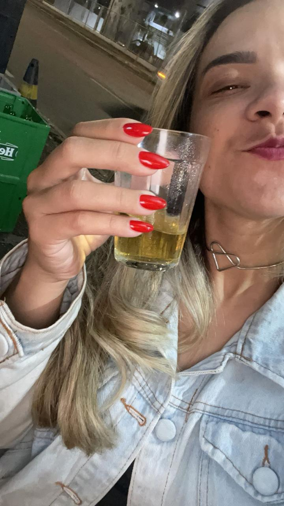
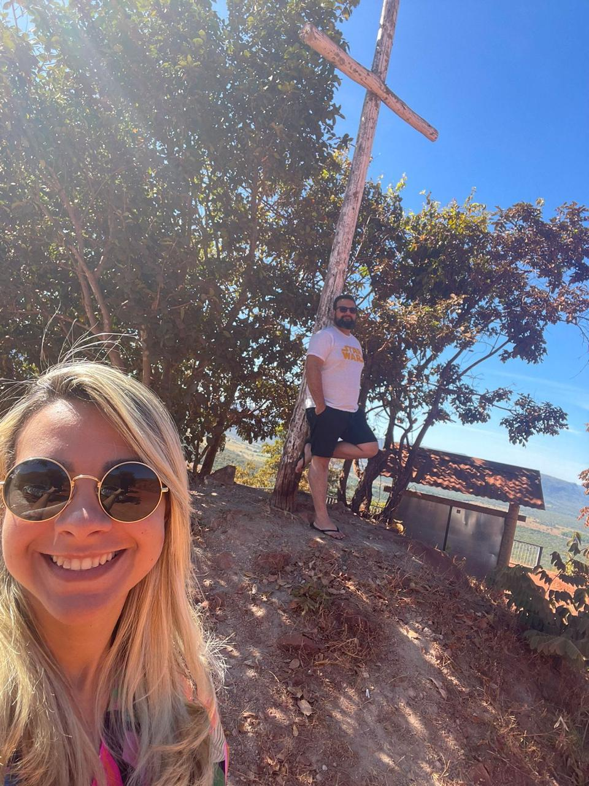

Eu sei que a cabeça está barulhenta e que os últimos dias têm exigido uma força absurda de você. Às vezes, a gente tenta abraçar o mundo, assume culpas que não são nossas e acaba esquecendo que não precisa carregar todo esse peso sozinha.
Esse link não é para falar de passado, não é para planejar o futuro e, definitivamente, não é para te cobrar nada. É apenas um convite para um respiro.
Quero te sequestrar um pouco dessa gravidade neste fim de semana. Preparei algo muito tranquilo, pensado exclusivamente para te ver sorrir e desligar a mente por algumas horas. Sem pressão, sem roteiros complexos e com uma surpresa no final que eu tenho certeza que você vai gostar.
Você não precisa se preocupar com logística, horário ou organização. Só precisa dizer "sim" para essa pausa.
Topa deixar o mundo no mudo por um dia e vir respirar um pouco?